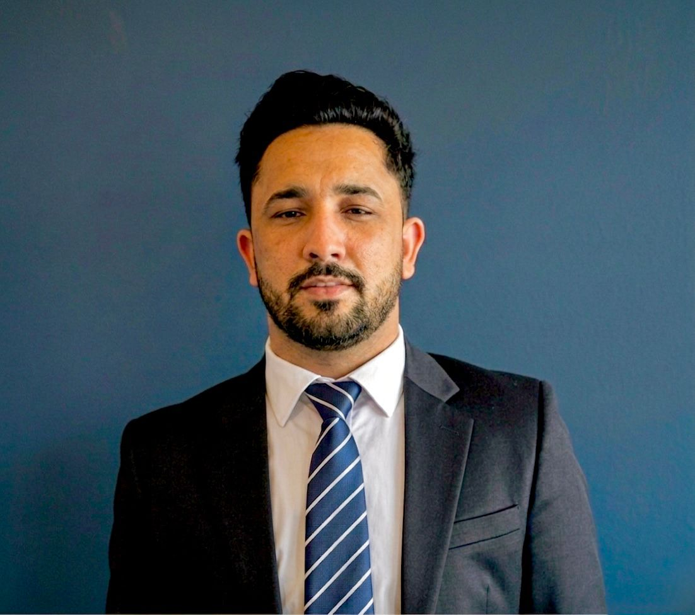

Multi-layer Non-Terrestrial Networks
AI-based resource allocation, load balancing and interference analysis across LEO, MEO and GEO layers for 6G access.

Marie Skłodowska-Curie (MSCA) Doctoral Fellow · FOCAL Doctoral Network
Dept. of Information and Communications Engineering · Aalto University, Finland
I am a doctoral researcher at Aalto University, in the Wireless Signal Processing research group at the Department of Information and Communications Engineering, as part of the FOCAL Marie Skłodowska-Curie Doctoral Network. My research focuses on 6G Non-Terrestrial Networks (NTNs), spanning AI-based resource allocation, network slicing, load balancing via free-space optical inter-satellite links, and interference analysis in multi-layer optical LEO constellations.
Previously, I was a Graduate Research Assistant at the Multimedia Communication and Systems Lab (MCSL), University of Ulsan, South Korea, where I developed metaheuristic optimization frameworks for wireless-powered IoT networks, IRS-assisted systems, and physical layer security.
Research
AI-based resource allocation, load balancing and interference analysis across LEO, MEO and GEO layers for 6G access.
Free-space optical ISLs that relay traffic between satellites, so load spreads across the constellation instead of queueing at one gateway.
Hop-by-hop reservation of time-frequency resources, so delay-critical flows meet their end-to-end delay budget over multi-hop LEO paths.
Energy harvesting, IRS-assisted links and physical layer security, optimized with particle swarm and genetic algorithms.
News
Publications
Featured paper New
Time-frequency resource blocks are reserved on every inter-satellite link of a flow's route and aligned hop by hop for pipelined forwarding. At high load and a high reliability target, the scheme needs about 31 ms, 2.5 to 6.8 times less than FIFO, FSF and pure TDMA.
Journal Articles
IEEE AccessIEEE Access, vol. 14, pp. 165592–165603, 2026
IEEE OJ-COMSIEEE Open Journal of the Communications Society, vol. 7, pp. 3439–3450, 2026
Enhancing Physical Layer Security in WPCNs With IRS and Controlled Jamming for 6G IoT Applications
IEEE AccessIEEE Access, vol. 13, pp. 4670–4682, 2025
Quantum PSO-Based Optimization of Secured IRS-Assisted Wireless-Powered IoT Networks
Appl. Sci.Applied Sciences (MDPI), vol. 14, no. 24, p. 11677, 2024
IEEE AccessIEEE Access, vol. 12, pp. 65241–65253, 2024
An Efficient and Improved Model for Power Theft Detection in Pakistan
BEEIBulletin of Electrical Engineering and Informatics, vol. 10, no. 4, pp. 1828–1837, 2021
Conference Papers
Resource Slicing for Time-Sensitive Data Traffic in Non-Terrestrial Networks with FSO ISLs
GC 2026 WSIEEE Global Communications Conference (GLOBECOM) Workshops, Macau, China, 2026 (accepted)
Load Balancing in Non-Terrestrial Networks Using Free Space Optical Inter-satellite Links
ICC 2026IEEE International Conference on Communications (ICC), Glasgow, Scotland, 2026
Integrated Sensing and Communication (ISAC) in Secured Wireless Powered IoT Networks
KICS 2024Symposium of the Korean Institute of Communications and Information Sciences (KICS), Jeju, Korea, 2024
Enhancing Sum Throughput in Wireless Powered IoT Networks Using TDMA-Based Resource Allocation
ICMT 202326th International Conference on Mechatronics Technology (ICMT), Busan, South Korea, pp. 1–5, 2023
Thesis
Optimization of Resources Allocation and Security in Wireless Powered IoT Networks
M.Sc.University of Ulsan, Ulsan, South Korea, 2025
Education & Experience
Education
Aalto University · Espoo, Finland
D.Sc. (Tech.) in Electrical Engineering — MSCA Doctoral Fellow
Focus: AI-based resource allocation and network slicing in multi-layer optical NTNs.
University of Ulsan · Ulsan, South Korea
M.Sc. in Electrical Engineering — BK21+ Scholarship
Focus: wireless-powered IoT, IRS-assisted systems, NOMA/TDMA, and metaheuristic optimization (PSO, GA).
University of Science & Technology Bannu · Bannu, Pakistan
B.E. in Electrical Engineering (Telecom) — HEC Fully Funded Scholarship
Final Year Project: intelligent IoT-based power theft detection system.
Experience
Aalto University · Wireless Signal Processing Group
MSCA Doctoral Fellow, FOCAL Doctoral Network
Research on NTN load balancing via FSO inter-satellite links, network slicing, and interference analysis in narrow-beam LEO satellite constellations.
Multimedia Communication and Systems Lab (MCSL), University of Ulsan
Graduate Research Assistant
Developed metaheuristic optimization frameworks (Quantum PSO, genetic algorithms) for throughput maximization and joint resource allocation in IRS-assisted, secured wireless-powered IoT networks, with a focus on physical layer security.
BioSafe Diagnostics
Sales & Service Engineer
Technical service and preventive maintenance for medical diagnostic equipment; managed sales operations and performed field modifications.
Pakistan Telecom Ltd. · PTV · TESCO
Trainee Engineer (Rotations)
Hands-on rotations in optical fiber & digital switching (PTCL), video distribution systems (PTV), and electrical protection testing (TESCO).
Training & Mobility
2nd FOCAL Training School & Midterm Check Meeting
TNO, Delft & Airbus, Leiden · The Netherlands
Presented my doctoral research at the network mid-term review. Technical sessions covered optical pointing, acquisition & tracking, coherent long-range optical communication, spatial-mode-multiplexed FSO, QKD space links, and AI/ML for satellite communication networks, with hands-on visits to the optical-communications labs at TNO and Airbus.
1st FOCAL Training School
Fraunhofer HHI · Berlin, Germany
Three-day MSCA training school on free-space optical (FSO) communication, satellite-based quantum key distribution (QKD), satellite constellation design, and NTN standardization in 3GPP, including visits to HHI's QKD and optical-communications laboratories.
Travel & Talks
Awards & Achievements
Marie Skłodowska-Curie Fellowship (MSCA-DN) — European Commission, 2025
Competitive EU doctoral fellowship for early-stage researchers, awarded for excellence in research and training. Part of the FOCAL Doctoral Network on future open communication architectures for 6G.
BK21+ (Brain Korea 21+) Scholarship — National Research Foundation of Korea, 2022–2025
Prestigious government-funded fellowship supporting outstanding graduate students in Korean universities, awarded for M.Sc. research at the University of Ulsan.
HEC Indigenous Scholarship (Balochistan & FATA) — Higher Education Commission of Pakistan, 2016–2020
Merit-based undergraduate scholarship awarded under the HEC project "Provision of Higher Education Opportunities for Students of Balochistan & FATA," a flagship national programme supporting talented students from underprivileged regions throughout the B.E. (Telecommunication) degree.
Additional Achievements
Skills, Tools & Certifications
Technical Skills
Certifications
Languages
Contact
I am always happy to discuss research collaborations, questions about 6G NTN or wireless communications, or potential opportunities. Feel free to reach out by email.